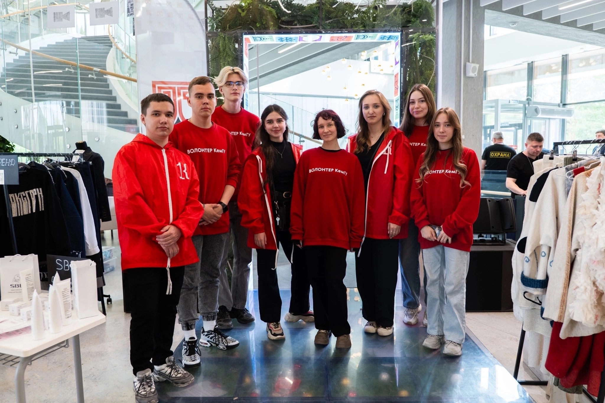
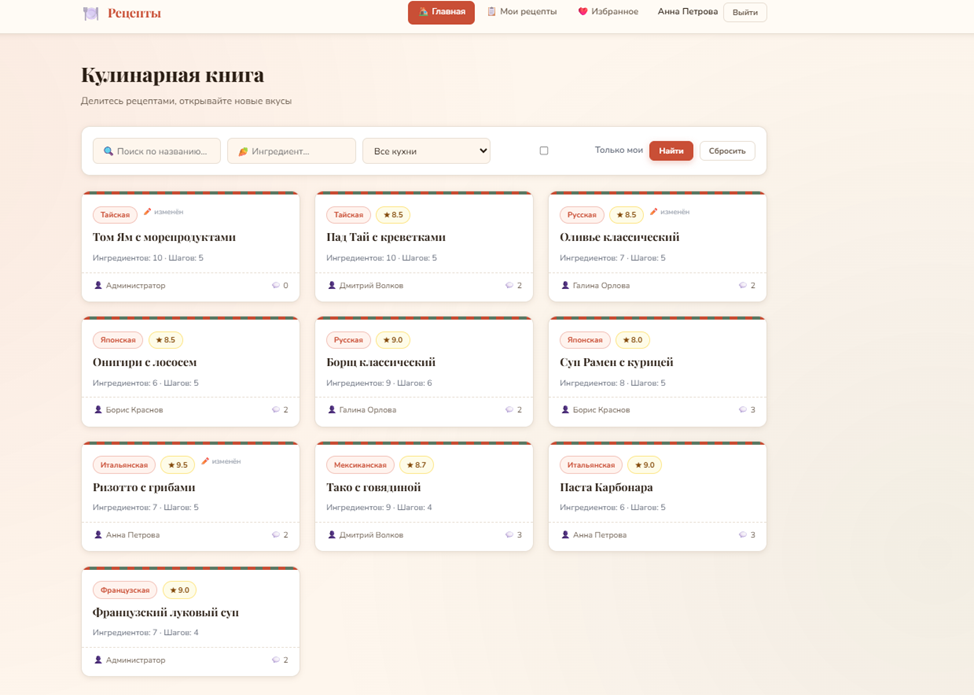

Информационные технологии
ФИТ-241 / STUDENT / WEB
Даниил
Улискин
Студент, начинающий разработчик и волонтёр. Собираю учебные проекты, изучаю технологии и постепенно превращаю идеи в работающие интерфейсы.
01
Веб-разработка
HTML · CSS · Python
DU
01 / PROFILEULISKIN
DANIIL E.
DANIIL E.
01
ABOUT ME
Не только
код.
Я Улискин Даниил Евгеньевич, студент группы ФИТ-241. Мне нравится создавать понятные цифровые продукты и разбираться в том, как они работают.
Помимо учёбы, я участвую в волонтёрских мероприятиях. Это помогает мне работать в команде, общаться с разными людьми и брать ответственность за общий результат.
Сейчас развиваюсь в веб-разработке, изучаю HTML, CSS и Python, а также продолжаю собирать собственное портфолио из учебных и личных проектов.
Участие в мероприятиях и командной работе
Интерфейсы, программирование и новые технологии
02
SKILLS
Что я
знаю
Технологии, которые сейчас изучаю и использую в учебных проектах.
01
Python
Основы программирования и работа с данными
90%02
Git
Репозитории, коммиты и командная работа
75%03
CSS
Адаптивная вёрстка, Grid, Flexbox
70%04
HTML
Семантическая структура страниц
70%03
PORTFOLIO
Избранные
проекты
Здесь будут мои учебные работы и проекты, которыми я хочу поделиться.

PROJECT 01VOLUNTEERING / 2026
01Моё участие в волонтёрстве
Опыт командной работы и участия в университетских мероприятиях.

PROJECT 02WEB / 2026
02Один из учебных проектов
Практика создания интерфейса и работы с веб-технологиями.
PROJECT 03
☼
WEATHERcity forecast / APIPYTHON / API
03Weather
Проект с погодой: получение и отображение актуальных данных.
04
CONTACTS
Давайте
общаться.
Всегда открыт для общения, новых проектов и интересных идей.